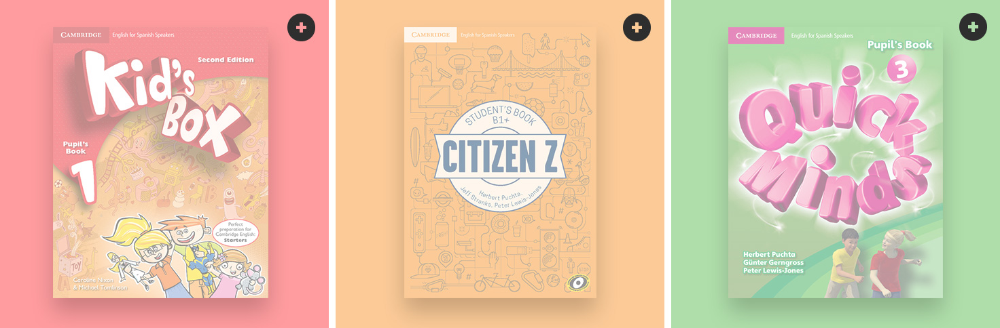
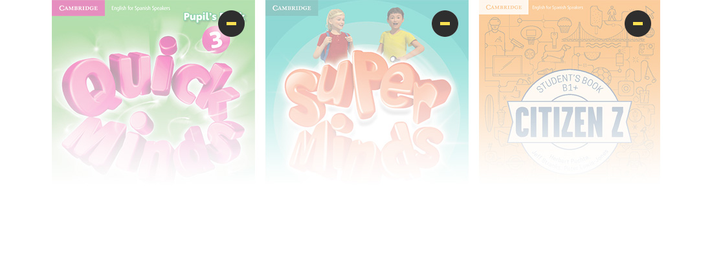
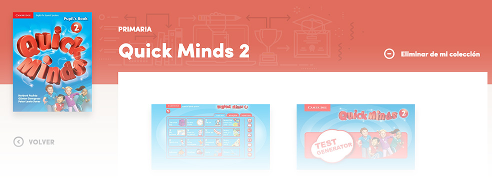

FAQs
En este apartado podrás ver las respuestas a las preguntas más comunes que tienen los usuarios de The Cambridge Teacher.
Si lo prefieres, puedes descargarte un manual completo de usuario desde aquí.
The Cambridge Teacher es la plataforma que Cambridge pone a disposición exclusiva de todos los profesores que utilizan nuestros cursos. En ella encontrarás:
- Tus productos digitales: acceso online al material de pizarra interactiva y a otros productos digitales como los Test Generators.
- Todos los recursos extra descargables para cada curso, para que puedas sacar el máximo partido al material del aula.
- Noticias y novedades relacionadas con la enseñanza del inglés, incluyendo nuestras jornadas de formación “The Cambridge Experience”.
Pincha en Regístrate Ahora y rellena los campos que aparecen:
- Nombre
- Apellido
- Contraseña
- Soy profesor de
- Código Postal de centro
- Nombre de centro
- School MasterCode (opcional)
Te enviaremos un correo de validación a la dirección de email que hayas incluido en el registro. En ese correo, que te llegará desde thecambridgeteacher@cambridge.es, vendrá un enlace donde tendrás que pinchar para confirmar tu registro.
Si no te ha llegado el correo de validación, revisa tu carpeta de correo no deseado. Si no lo encuentras tampoco ahí, puedes solicitar que te lo reenvíen desde este formulario de contacto.
Pincha en el enlace ¿No encuentras tu centro? y rellena el formulario de contacto que te aparecerá a continuación. Tu oficina local se pondrá en contacto contigo una vez haya verificado los datos del centro e indicándote cuándo puedes darte de alta.
The Cambridge Teacher está pensada para profesores que imparten clase en centros educativos. Si necesitas acceder a los recursos descargables de nuestros cursos para tus clases particulares, puedes hacerlo en www.cambridge.es.
El School MasterCode es un código único que identifica a tu centro educativo, y que tu oficina local te proporcionará si en vuestro centro utilizáis libros de Cambridge University Press. No es obligatorio introducirlo en el momento de registrarte.
- Si lo introduces, pasas a ser usuario completo de The Cambridge Teacher. Te da acceso a los libros completos adoptados en tu centro y a versiones de prueba de otros libros.
- Si no tienes el School MasterCode, al darte de alta tendrás acceso como Guest y podrás ver solamente los libros de prueba. Los libros de prueba ofrecen una selección de recursos descargables y demos de nuestros productos digitales.
Como es un campo opcional en el registro, si no lo conoces puedes registrarte primero como Guest y luego añadirlo más tarde a tu perfil. En ese momento se cargarán en el catálogo los libros que estéis utilizando en tu centro para que te los puedas añadir a tu colección.
Si en tu centro estáis utilizando libros de Cambridge University Press pero no conoces el School MasterCode, pídelo a tu oficina local desde este formulario de contacto.
Haz click en ‘Acceder’ y pincha en el enlace de ‘No recuerdo mi contraseña’. Te pediremos tu dirección de correo electrónico y te enviaremos un email con instrucciones para restablecer tu contraseña.
Te recomendamos que te descargues el manual de usuario desde aquí. También puedes contactar con tu oficina local a través de este formulario de contacto.
Después de registrarte, te aparecerá una pantalla donde tendrás acceso a la pestaña Catálogo. Para ver el contenido de los títulos, debes añadirte cada título a tu Colección.
Depende de si en el registro has introducido el School MasterCode, un código único que identifica a tu centro educativo, y que tu oficina local te proporcionará si en vuestro centro utilizáis libros de Cambridge University Press. No es obligatorio introducirlo en el momento de registrarte.
- Si lo introduces, pasas a ser usuario completo de The Cambridge Teacher. Te da acceso a los libros completos adoptados en tu centro y a versiones de prueba de otros libros.
- Si no tienes el School MasterCode, al darte de alta tendrás acceso como Guest y podrás ver solamente los libros de prueba. Los libros de prueba ofrecen una selección de recursos descargables y demos de nuestros productos digitales.

Como es un campo opcional en el registro, si no lo conoces puedes registrarte primero como Guest y luego añadirlo más tarde a tu perfil. En ese momento se cargarán en el catálogo los libros que estéis utilizando en tu centro para que te los puedas añadir a tu colección.
Desde Mi Colección, pincha en “Añadir más títulos”. Esto te llevará al Catálogo donde podrás seleccionar los títulos que deseas añadir navegando entre las distintas etapas educativas. Para añadir un título, haz click sobre el símbolo “” que aparece en la esquina superior derecha de cada libro. Cuando hayas seleccionado todos los que necesitas, confirma tu selección haciendo clic en el botón “Añadir a mi colección”.
Desde Mi Colección, pincha en “Quitar títulos”. Verás todas las cubiertas con un símbolo “x” ““ en la esquina superior derecha. Cuando hayas seleccionado todos los que necesitas, confirma tu selección haciendo clic en el botón “Quitar de mi colección”.
Aunque elimines libros de tu colección, siempre estarán disponibles en el Catálogo mientras los esté utilizando tu centro. Las versiones de prueba estarán siempre disponibles.
Para ver los libros de tu centro debes añadir el School MasterCode a tu perfil. El School MasterCode es un código único que identifica a tu centro educativo, y que tu oficina local te proporcionará si en vuestro centro utilizáis libros de Cambridge University Press.
Para añadir el School MasterCode a tu perfil después de haberte registrado, hazlo en caja que aparece en la esquina derecha:
Si en tu centro estáis utilizando libros de Cambridge pero no conoces el School MasterCode, pídelo a tu oficina local desde este formulario de contacto.
Utiliza este formulario de contacto para comunicarte con tu oficina local. Ellos verificarán los datos del centro y se pondrán en contacto contigo.
Inicia la sesión y pincha en el enlace de ‘No recuerdo mi contraseña’. Te pediremos tu dirección de correo electrónico y te enviaremos un email con instrucciones para resetearla.
Pinchando en tu nombre en la esquina superior derecha, accede a la sección ‘Perfil’ donde podrás cambiar:
- tu nombre y apellidos
- etapas educativas en las que impartes clase
- tu aceptación de envío de comunicaciones
- tu contraseña (deberás introducir la antigua contraseña, y repetir la nueva dos veces para asegurar que el cambio se hace correctamente).
Si lo que necesitas es cambiar tu dirección de correo electrónico, solicítalo a tu oficina local a través de este formulario de contacto.
Si estás en un centro distinto al que estabas cuando te diste de alta, solicita el cambio a tu oficina local mediante este formulario de contacto.
Los siguientes títulos tienen productos digitales en formato DVD que también están disponibles para acceso online dentro de The Cambridge Teacher:
- Quick Minds (Digital Minds para pizarra interactiva y Test Generator)
- Kid’s Box (Digital Box para pizarra interactiva)
- Smart Planet (Digital Planet para pizarra interactiva y Test Generator)
- Citizen Z (Digital Citizen Z para pizarra interactiva y Test Generator)
- Out & About (Digital Out & About para pizarra interactiva y Test Generator)
- Cambridge English Empower (Digital Empower para pizarra interactiva)
- EOI Test Generator (Test Generator)
- Cambridge English Prepare (Test Generator)
Los DVD se pueden utilizar de forma independiente al material online, pero en ese caso el contenido no estará sincronizado. Si quieres que tus anotaciones, documentos extra, enlaces personales, etc. te aparezcan tanto en el DVD como cuando accedes online a través de The Cambridge Teacher, debes ir al icono de sincronización del DVD e introducir ahí tu usuario y contraseña de The Cambridge Teacher.
No, The Cambridge Teacher es una plataforma de uso 100% online. Si necesitas acceder sólo a los productos digitales (material para pizarra interactiva y Test Generators) y tienes dificultades con tu conexión a internet, solicita a tu representante que te los proporcione en DVD.
Los recursos extra están sólo disponibles online, aunque la mayoría son descargables.
Desde la tableta puedes acceder con normalidad, usando el navegador que tengas instalado, de la misma forma que navegarías por cualquier otra página de internet.
Para algunos de los recursos descargables necesitarás tener instalado un visor (PDF, Word, excel). También algunos de los recursos descargables están comprimidos en zip, así que para abrirlos en la tableta necesitarás una aplicación que abra archivos en zip.
No te recomendamos el acceso mediante móvil, es preferible hacerlo desde ordenador, portátil o tableta.
Te recomendamos que te descargues el manual de usuario desde aquí. También puedes contactar con tu oficina local a través de este formulario de contacto.